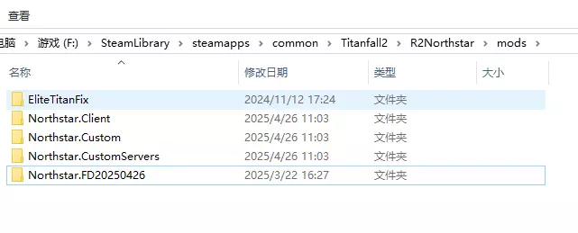
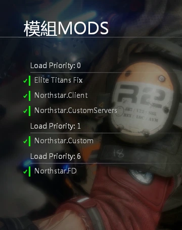

01
游戏准备
请确保您拥有正版的泰坦陨落2并装载了北极星 CN。本指南为泰坦陨落2的北极星 SL 玩家准备，泰坦陨落1玩家无需阅读。
还没有游戏，推荐先在 Steam 购买。已经下载了泰坦陨落2，请先下载北极星 CN。官网有较为详细的教程，推荐使用北极星 CN 启动器（自动安装器）。
视频与本指南部分内容重合。仍然感觉困难，可以求助他人。
反馈在此段落遇到问题，在群内提问时请 @悠尔0youer，便于改进萌新指南。
02
MOD 安装
不装也能进服务器，但会有很多 bug。
例如：无法看见精英泰坦血条、强力无法锁定精英泰坦，以及某些情况下的闪退。
建议安装
QQ 群文件中也有：群文件 › 萌新指南。群文件里有很多名称相似的文件，不要直接用最新版本，请确认文件夹和名称都正确。
冲突已经安装了摸鱼服的摸鱼飞弹或 ks 群的修复 MOD，会与之冲突，在 MODS 管理器中不要同时启用。
精简教程
下载这两个 MOD，解压后放进 Titanfall2\R2Northstar\mods。
03
详细步骤
- 把两个文件下载到你能找到的位置。点击下载后选择另存为；电脑小白建议存到桌面。
- Steam 版：Steam 库 › 打开泰坦陨落2 › 右侧齿轮（管理）› 管理 › 浏览本地文件，弹出 Titanfall2 文件夹。
- Origin / EA 版：打开 EA App › 左上角三条横线 › 设置 › 下载 › 安装位置，找到 Titanfall2 文件夹。
- 在 Titanfall2 文件夹中找到 R2Northstar。没有的话，请检查「游戏准备」是否完成。
- 打开 Titanfall2\R2Northstar\mods。这里应有 3 个核心 MOD：Northstar.CustomServers、Northstar.Custom、Northstar.Client。不要卸载，不要删除。
- 把下载好的两个 zip 文件移动到这里。
- 右键其中一个，选择「全部解压缩」，确定。另一个同样操作。
- 没有「全部解压缩」选项，说明电脑缺少解压软件（不是硬件问题）。B 站解压软件使用教程
- 解压后检查文件夹里是否还套着同名文件夹。有的话把里层移到 mods，删掉空文件夹。压缩包可以删除。

完成后的 mods 文件夹 - 用北极星 CN 启动器或游戏目录中的 NorthstarLauncher.exe 启动游戏，在主界面点击中下方的「模组 MODS」检查。

游戏内的模组界面 - 启动游戏，尽情游玩。欢迎您，新成员。
反馈在此段落遇到问题，在群内提问时请 @悠尔0youer，便于改进萌新指南。